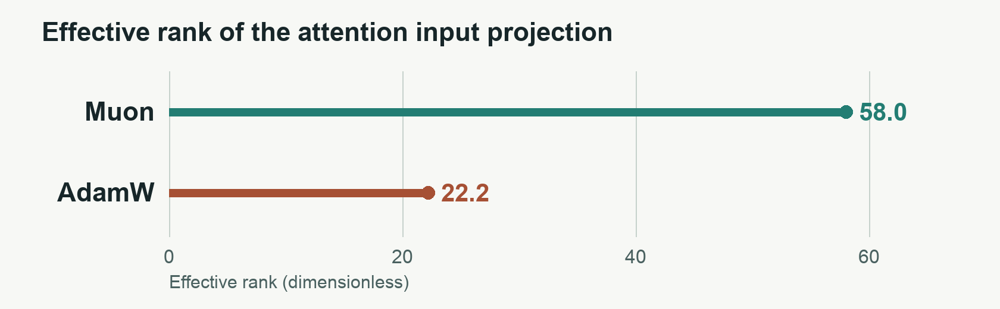

The Spectral Dynamics and Noise Geometry of Muon

Motivation
Many different weight matrices can fit the same training data. An optimizer helps decide which one a network reaches. Muon gives its update the same magnitude along each active singular direction. We asked when that choice distributes the learned weights across more directions, and whether it helps a model generalize.
Prior work
Muon was introduced to train the hidden layers of neural networks. Its matrix update differs from AdamW, which adapts the step for each parameter and applies weight decay separately. We began with matrix regression, where several solutions fit the observations exactly, and used it to isolate what each update does to the shape of the learned weights.
What we found
Our preprint derives a condition for when the weight spectrum flattens in a simplified regression model. Muon also achieved lower validation loss than AdamW on a small language model, while AdamW performed better on a matched vision transformer. This study was a test case for pAI/MSc. The system drafted the paper, and the authors inspected the mathematical claims and experiment logs.